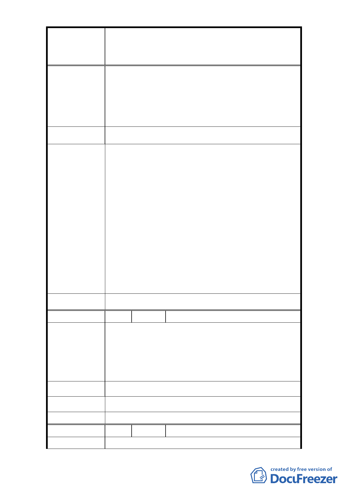

修訂臺北市大安區青田街保存區聚落風貌保存專用區細部計
案
名
畫、變更部分第三種住宅區、第三種商業區(特)為第三種住宅區
(特)(日式宿舍)及第三種商業區(特)(日式宿舍)暨劃定週邊地
區都市設計管制細部計畫案
1. 本基地(地段號:大安區金華段二小段 165 地號，門
牌號：大安區青田街 7 巷 9 號)建築物本體非屬傳統
陳 情 理 由 日式宿舍形式，不具保存價值。
2. 管制日式宿舍群，只有本案屬私人財產，但因計畫
管制而有損所有權人權益。
建 議 辦 法 請主管機關解除管制。
1. 龍安里青田社區發展協會向本府申請指定該區 35 處
日式宿舍為古蹟，以整體保存本區日式宿舍群落風
貌。經文化局依文資法相關法令程序辦理文化資產
價值鑑定後，於 95、96 年公告 4 處古蹟、7 處歷史
建築具保存價值，並未含本建物及其他日式宿舍。
2. 本建物係本市都市計畫委員會於 96 年 2 月 13 日第
565 次委員會議中決議：「為形塑整體街區保存與維
市 府 回 覆 意 見 護土地權利關係人權益，本計畫案管制區內除以指
定古蹟、已登錄歷史建築外，增加日式 1 類可適用
內政部頒訂都市計畫容積移轉辦法」而將不具文資
價值身分之日式宿舍納入都市計畫管制範圍加以管
制，並依 96 年 8 月 9 日公告之細部計畫規定辦理。
3. 經檢討考該建物屬私人所有，且不具文資保存價
值，為保障所有權人權益，本計畫將該建物回復為
第三種住宅區。
委 員 會 決 議 依市府回覆意見辦理。
編 號 8 陳情人 財政部國有財產局臺灣北區辦事處
市府所提細部計畫之土地權屬表中（第 18 頁），經查臺
北市大安區金華段二小段 429 地號國有土地，管理機關
陳 情 理 由 已變更為本局。另同小段 81 地號土地係屬國立台灣師
範大學經管之國有土地，有關本案公開展覽期間之意
見，請逕洽該校辦理。
建議辦法
市 府 回 覆 意 見 業依所提意見修正。
委 員 會 決 議 依市府回覆意見辦理。
編 號 9 陳情人 林坤德
陳 情 理 由 本區住 3 土地建蔽率為 45%，唯因鄰近日式宿舍聚落專
- 13 -